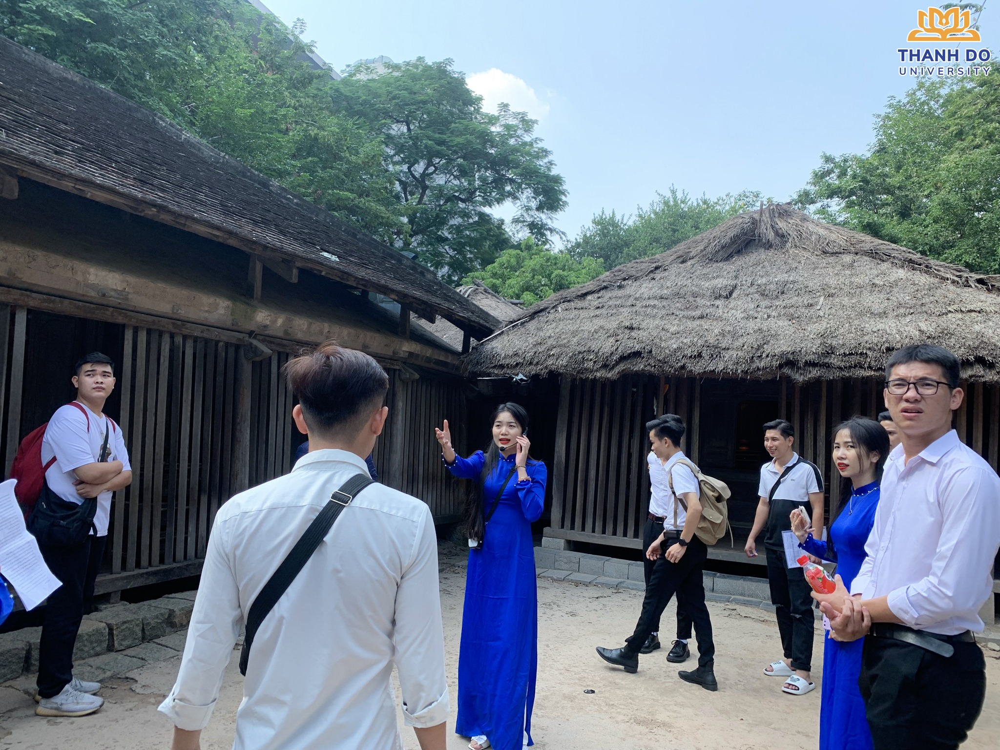
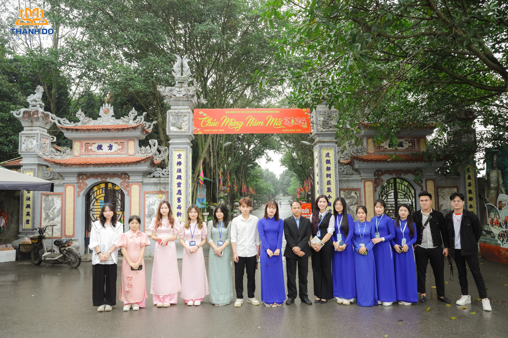

Việt Nam học
Tổng quan
Việt Nam học (Hướng dẫn Du lịch) là ngành khoa học nghiên cứu đa lĩnh vực về đất nước và con người Việt Nam trên nhiều phương diện khác nhau như: Văn hóa, lịch sử, địa lý, kinh tế, phong tục tập quán, tín ngưỡng, tôn giáo, ngôn ngữ, trang phục,… để làm rõ những nét riêng độc đáo vốn có của Việt Nam.
- Mã ngành: 7310630
- Định hướng đào tạo: Hướng dẫn du lịch
- Thời gian đào tạo: Tùy thuộc vào đối tượng đầu vào (Trung cấp, Cao đẳng, Đại học)
- Trình độ đào tạo: Cử nhân
- Học phí: 370.000 đồng/1 tín chỉ
Chương trình đào tạo
Tổng số tín chỉ của chương trình đào tạo (Chưa tính các học phần Giáo dục thể chất, Giáo dục Quốc phòng – An ninh, tiếng Anh chuẩn đầu ra): 137 tín chỉ
- Kiến thức giáo dục đại cương: 39 tín chỉ
- Kiến thức giáo dục chuyên nghiệp: 71 tín chỉ
- Học kỳ doanh nghiệp: 20 tín chỉ
- Khóa luận tốt nghiệp/Các học phần thay thế KLTN: 7 tín chỉ
Mô tả chương trình đào tạo: Xem chi tiết tại đây

Triển vọng nghề nghiệp
Trong tiến trình Việt Nam đang xây dựng và hội nhập sâu rộng vào quốc tế, Việt Nam học giúp người Việt hiểu hơn về đất nước mình cũng như là một trong những cách giúp bạn bè Thế giới hiểu hơn về đất nước, con người Việt Nam. Vì thế đây cũng là ngành được nhiều sinh viên quốc tế theo học.
Việt Nam là điểm đến hấp dẫn với nguồn tài nguyên thiên nhiên, tài nguyên văn hóa phong phú, người Việt Nam thân thiện nhiệt tình, mến khách. Món ăn tươi ngon hấp dẫn là những điểm sáng cho ngành du lịch Việt Nam. Mặc dù chịu sự tác động của dịch Covid 19 nhưng du lịch Việt Nam vẫn là điểm thu hút du khách những năm tới. Du lịch phát triển đã mở ra vô số cơ hội việc làm và triển vọng tiến xa trong nghề nghiệp cho các bạn trẻ yêu thích lĩnh vực này.
Vị trí việc làm của sinh viên Việt Nam học (Hướng dẫn du lịch) tại TDD:
- Hướng dẫn viên du lịch hoặc chuyên viên phụ trách các bộ phận: lưu trú, tiếp thị, chăm sóc khách hàng, tổ chức hội nghị sự kiện
- Quản trị, điều hành, thiết kế tour tại các công ty du lịch trong và ngoài nước, các tổ chức phi chính phủ
- Chuyên viên tại các Sở, Ban, Ngành về Du lịch hoặc nghiên cứu và giảng dạy về du lịch tại các cơ sở đào tạo, viện nghiên cứu

